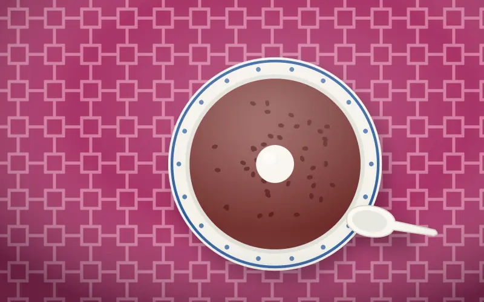
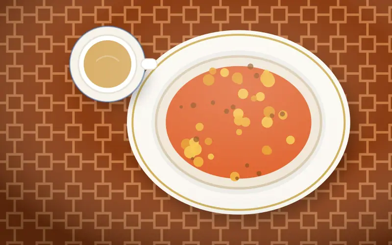

Cheap eats in Tai Po 大埔區
8 places, from $16. Tap one for prices, hours and the nearest MTR.

Ah Po Tofu Fa亞婆豆腐花 · Tai Po~$16 Tai Po Hui Market Cooked Food Centre大埔墟街市熟食中心 · Tai Po~$35
Tai Po Hui Market Cooked Food Centre大埔墟街市熟食中心 · Tai Po~$35 Tam Jai Yunnan Mixian (Tai Po)譚仔雲南米線（大埔） · Tai Po$56
Tam Jai Yunnan Mixian (Tai Po)譚仔雲南米線（大埔） · Tai Po$56  Tsui Wah (Tai Po)翠華（大埔） · Tai Po$42
Tsui Wah (Tai Po)翠華（大埔） · Tai Po$42  Fairwood (Tai Po)大快活（大埔） · Tai Po$50
Fairwood (Tai Po)大快活（大埔） · Tai Po$50 
Café de Coral (Tai Po)大家樂（大埔） · Tai Po$58 Maxim's MX (Tai Po)美心MX（大埔） · Tai Po$33
Maxim's MX (Tai Po)美心MX（大埔） · Tai Po$33  Yoshinoya (Tai Po)吉野家（大埔） · Tai Po$46
Yoshinoya (Tai Po)吉野家（大埔） · Tai Po$46